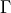
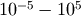

A synthetic experiment: simulating the performance of Sentinel-2¶
A useful application of the EOLDAS tools is to simulate how different sensors or combinations of sensors might be expected to work together. Simply, we could generate a set of artificial observations, acquired by a sensor (or sensors) from which the spectral, noise and orbital acquisition characteristics are known (or we can try different set ups to see their trade offs). We can then use EOLDAS to invert these synthetic observations and compare to the reality that went into them. This type of experiments can be very useful to test, for example, the usefulness of constellation concepts. The current example is a reduced version of the experiments that are presented in Lewis et al (2010), and show the use of EOLDAS in simulating ESA’s upcoming Sentinel-2 performance for the inversion of biophysical parameters. In this document, we try to reproduce the middle column in Figure 2 in Lewis et al (2010)
The experiment can be split into a set of simple tasks:
- We need to generate an appropriate set of observations. On the one hand, this requires
- An idea of typical angular sampling.
- An idea of the statistics of missing observations due to e.g. cloud.
- Trajectories for the land surface parameters.
Forward model the land surface parameters to land surface reflectance.
Add noise to the observations
Invert the observations, with whatever prior information might be available.
The first step will require the definition of a typical re-visit schedule for the sensor, as well as information on illumination geometries. We make use of the pyephem Python package to calculate the solar position at a given latitude and longitude. Some simple rules are given to model the sensor acquisition geometry (for example, the view zenith angle is assumed to be random). We can use full wavebands, or just the median wavelength of each band (the latter is far more efficient, and this solution can be used as a starting point to solve the full bandpass problem).
A further refinement is the inclusion of missing observations due to cloud cover, for example. It is typically observed that cloudiness is correlated in time, so a model of cloudiness that simulates the typical burst nature of cloud statistics is required. Another way to go about this is to use long term cloudiness observations, but we choose a very simple approach in this work.
The parameter trajectories are functions that describe the evolution of a given parameter in time. In this case, we choose to vary the following parameters:
- LAI
- Chlorophyll concentration
- Leaf water
- Leaf dry matter
- Number of leaf layers
- First soil component
This is an ambitious scenario: the analytic trajectories chosen for these parameters are smooth, but with very different degrees of smoothness. Some parameters are set to be constant (leaf layers and leaf dry matter). We will assume that the regulariser that solves this problem is identical for all the parameters, and constant in time. Even though we know that this is not the case, this simplifying assumption still allows the recovery of reasonable parameter estimates. Note that while in some cases (such as leaf area index) one might have mechanistic models that maybe use meteorological inputs to simulate photosynthesis and allocation of assimilated carbon to the leaves to estimate the amount of leaf area, for other parameters that have a significant impact on the remote sensing signal, these models might not be available.
The forward modelling of the parameter trajectories, coupled with the required wavebands and illumination geometries, produces a set of synthetic observations: this is what a sensor, operating with the given characteristics would “see”, in terms of surface reflectance. As with any measurement, noise needs to be incorporated. We do this by adding some Gaussian noise to the simulated reflectances, in line with what we expect to be typical values after atmospheric correction. Although we assume noise to be uncorrelated across bands, in practice it will be.
Finally, we solve the inverse problem: find the parameter trajectories given the set of noisy and incomplete observations. In reality, we also need to estimate the strength of the regularisation, a hyperparameter. In Lewis et al (2011) this is done using cross-validation. In the paper, we proceeded as follows:
- Set a number of values that  might take. This will necessarily be a large range (say from ), but prior experience might dictate a suitable interval.
- For one value of ...
- Select one single observation, and remove it from the observations that will go into the inversion
- Solve the inverse problem
- Predict the missing observation, and compare with the truth
Calculate a prediction metric, such as root mean square error (RMSE) or similar
Select the value of that results in the most accurate predictions.
This method is clearly very time consuming, but can be carried out in parallel. Note that the optimal value of will be different if the nature of the problem (priors, order of the smoothness constraint, etc) changes. We shall not concern ourselves with crossvalidaiton here, and will use the optimal values from the paper.
For comparison purposes, we will also solve each observation independently, which is similar to what one would do in look-up table-based inversion approaches. In general, the problem of inverting six parameters from a single multispectral observation is incredibly ill-posed. The very informative sampling scheme of the MSI2 sensor however allows inversions. We shall also calculate the associated uncertainty of these single inversions, which we expect to be very high (and exhibit large degrees of correlation between parameters), and also note that when no observations are available, there will be no estimate of land surface parameters.
The next sections describe the python script that performs the experiment.
Anatomy of the simulation code¶
The code is organised in a single class, Sentinel. This class will perform all the above described tasks. The user might want to modify this class to perform other experiments. The class basically writes out files, and also runs the eoldas prototype as required. As mentioned above, we use the pyephem package to simulate the solar geometry.
Simulating the acquisition geometry¶
Solar calculations are performed in the fwdModel method of Sentinel:
o = ephem.Observer()
o.lat, o.long, o.date = lat, lon , datetime.datetime(int(year), 1, 1, 10, 30)
sun = ephem.Sun(o)
dd = o.date
We assume that the satellite overpass is 10:30 local time, and give a suitable longitude and latitude.